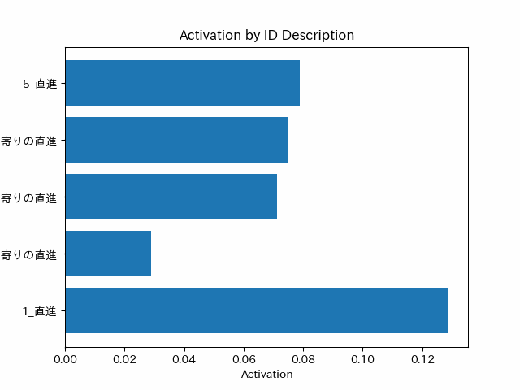

この実験は、選択的転移強化学習において転移先の強化学習済み知識が存在する状態を想定した実験である。
目的は、転移先が用意されればすぐに転移できるSAP-netの作成を行うことである。
データの用意
まずデータの用意から前回に引き続き行っていく フォルダの作成を現在時刻から行い、それをフォルダパスとして生成している。
import os
import datetime
# Get current time
current_time = datetime.datetime.now().strftime("%Y%m%d%H%M%S")
# Create output folder with the current time as part of the name
folder_name = f"./Output_{current_time}"
if not os.path.exists(folder_name):
os.makedirs(folder_name)
# 出力
Heatmap_path = folder_name + '/heatmap.png'
Network_path = folder_name + '/network.png'
Plotpoint_path = folder_name + '/plotpoint.png'
GIF_path_100 = folder_name + '/graph_100.gif'
GIF_path_1000 = folder_name + '/graph_1000.gif'
次に、データベースの作成と同時にテーブルの作成を行っていく。 データベース名はdatabase.sqlite、テーブル名はknowledgeである。 knowledgeテーブルは、id,angle,distance,activation,descriptionを保持している。 それぞれ、一意のIDと、角度、距離、活性値、説明である。
import sqlite3
def SQL_SetUp():
conn = sqlite3.connect('database.sqlite')
cursor = conn.cursor()
# データベースファイルが存在する場合は処理を終了
cursor.execute("SELECT name FROM sqlite_master WHERE type='table'")
existing_tables = cursor.fetchall()
if existing_tables:
print("Database already exists. Exiting setup.")
conn.close()
return
# テーブルを作成
cursor.execute('''
CREATE TABLE knowledge (
id INTEGER PRIMARY KEY AUTOINCREMENT,
angle FLOAT,
distance FLOAT,
activation FLOAT DEFAULT 0,
description TEXT
)
''')
data = [
("直進", 333.44, 1.12, 0),#１番の知識
("左寄りの直進", 345.97, 1.03, 0),#２番の知識
("右寄りの直進", 0, 1, 0),#１番の知識
("右寄りの直進", 14.04, 1.03, 0),#１番の知識
("直進", 26.56, 1.12, 0)#１番の知識
]
# データを挿入
cursor.executemany("INSERT INTO knowledge (description, angle, distance, activation) VALUES (?, ?, ?, ?)", data)
conn.commit()
conn.close()
# データベースのセットアップ
SQL_SetUp()
SQLから値を抽出し、データフレームに格納している。
import sqlite3
import pandas as pd
def SQL_GetData():
conn = sqlite3.connect('database.sqlite')
cursor = conn.cursor()
# データを取得してDataFrameに格納
cursor.execute("SELECT * FROM knowledge")
rows = cursor.fetchall()
columns = [description[0] for description in cursor.description]
df = pd.DataFrame(rows, columns=columns)
conn.close()
return df
# データの取得と表示
df = SQL_GetData()
print(df)

障害物データの追加を行う。SQLには、追加せず、dataframeにだけ追加することで後にSAPnetに対応しやすくしている
# 新しいデータを追加
new_id = len(df) + 1
new_activation = -1.0
new_description = '障害物'
new_angle = float(input('角度を入力してください: '))
new_distance = float(input('距離を入力してください: '))
new_data = pd.DataFrame({
'id': [new_id],
'activation': [new_activation],
'description': [new_description],
'angle': [new_angle],
'distance': [new_distance]
})
input_df = pd.concat([df, new_data], ignore_index=True)
# idとdescriptionを結合した文字列を作成
input_df['id_description'] = input_df['id'].astype(str) + '_' + input_df['description']
print(input_df)

データ処理
既知知識のを可視化するために、全網羅ネットワーク知識を可視化 その際にWibotとの差を埋めるために、90度を加算することで、前方方向にあるように表現している。
import numpy as np
import matplotlib.pyplot as plt
import sqlite3
from matplotlib.font_manager import FontProperties
def plot_points():
conn = sqlite3.connect('database.sqlite')
cursor = conn.cursor()
# データを取得
cursor.execute("SELECT description, angle, distance FROM knowledge")
rows = cursor.fetchall()
conn.close()
# データを変換
converted_points = []
descriptions = []
for description, angle, distance in rows:
shifted_angle = angle + 90 # 角度を+90度ずらす
x = distance * np.cos(np.deg2rad(shifted_angle))
y = distance * np.sin(np.deg2rad(shifted_angle))
converted_points.append((x, y))
descriptions.append(description)
# 図にプロット
fig, ax = plt.subplots(figsize=(8, 8)) # グラフのサイズを設定
ax.set_aspect('equal')
ax.set_xlim(-5, 5)
ax.set_ylim(-5, 5)
# MS Gothicフォントを読み込む
font_prop = FontProperties(fname=r'C:\Windows\Fonts\msgothic.ttc', size=9)
# ポイントをプロット
scatter = ax.scatter(*zip(*converted_points), c='b', marker='o')
# 中心座標を計算
center_x, center_y = 0, 0
# 点と中心を線で結ぶ
for point, description in zip(converted_points, descriptions):
x, y = point
ax.plot([center_x, x], [center_y, y], 'r--')
ax.text(x, y, description, ha='center', va='bottom', fontproperties=font_prop)
plt.show()
# データのプロット
plot_points()

現在所持しているデータフレームのカラム名からクロス表を作成する。
import pandas as pd
import numpy as np
# クロス表を作成
cross_table = pd.crosstab(input_df['id_description'], input_df['id_description'])
cross_table = cross_table.replace(1, np.nan)
# 新しいデータフレームを表示
print(cross_table)

計算処理
現在所持しているデータフレームの各知識がもつ角度や距離からユークリッド距離を計算する。
import pandas as pd
import numpy as np
# ベクトルとして角度と距離を使用するため、データを準備
vectors = input_df[['angle', 'distance']]
# ベクトル間のユークリッド距離を計算
distances = np.linalg.norm(vectors.values[:, np.newaxis] - vectors.values, axis=2)
# クロス表に距離を格納
cross_table = pd.DataFrame(distances, index=input_df['id_description'], columns=input_df['id_description'])
# 新しいデータフレームを表示
print(cross_table)

計算した、ユークリッド距離の最大値を用いて、スケーリングを行い０～１の値に正規化を行う。
import numpy as np
# ユークリッド距離を評価する指標を計算する関数
def evaluate_distance(distance):
max_distance = np.nanmax(cross_table.values) # ユークリッド距離の最大値（NaNを除く）
scaled_distance = distance / max_distance # ユークリッド距離を最大値でスケーリング
evaluation = 1 - scaled_distance # 1からスケーリングされた距離を引く
return evaluation
# ユークリッド距離の評価指標を計算し、再度DataFrameに格納
evaluated_values = cross_table.applymap(evaluate_distance)
activation_table = evaluated_values.copy()
# 再度dfを表示
print(activation_table)

スケーリングを行い０～１の値に正規化した値を活性化に用いるために、1/10に補正する。
import numpy as np
# ユークリッド距離を評価する指標を計算する関数
def evaluate_distance(distance):
max_distance = np.nanmax(cross_table.values) # ユークリッド距離の最大値（NaNを除く）
scaled_distance = distance / max_distance # ユークリッド距離を最大値でスケーリング
evaluation = 1 - scaled_distance # 1からスケーリングされた距離を引く
return evaluation
# ユークリッド距離の評価指標を計算し、再度DataFrameに格納
evaluated_values = cross_table.applymap(evaluate_distance)
activation_table = evaluated_values.copy()
# 評価指標を1/10にスケーリング
activation_table_div10 = activation_table / 10
activation_table_min1 = 1-activation_table
# 再度activation_tableを表示
print(activation_table_div10)
ここまで作成したデータフレームをテスト用に使用するため、複製した。
input_df2=input_df.copy()
print(input_df)
print(input_df2)

活性化のために作成したデータフレームを検索データベースとして使用し、元のデータフレームに対応する活性値を足し算していく。 後に忘却の値も実装する。 さらに、データベースに保存する機能も実装する。
import sqlite3
import pandas as pd
import sqlite3
import matplotlib.pyplot as plt
from PIL import Image # Import the PIL module
import io
from IPython.display import HTML
from IPython.display import display
from PIL import Image # Import the PIL module
import glob # Import the glob module
import japanize_matplotlib
import pandas as pd
import matplotlib.pyplot as plt
from PIL import Image
import io
import base64
from IPython import display as dd
for i in range(len(activation_table_div10.columns)-1):
print(activation_table_div10.columns[i], activation_table_div10.columns[-1])
activity_value_temp = activation_table_div10.loc[activation_table_div10.columns[i], activation_table_div10.columns[-1]]
input_df2.loc[input_df2['id_description'] == activation_table_div10.columns[i], 'activation'] += activity_value_temp
# 画像を格納するリスト
images = []
while not (input_df2['activation'] > 1).any():
for i in range(len(activation_table_div10.columns)):
for j in range(len(activation_table_div10.columns)):
if i==j:
continue
activity_value_temp = activation_table_div10.loc[activation_table_div10.columns[i], activation_table_div10.columns[j]]
input_df2.loc[input_df2['id_description'] == activation_table_div10.columns[i], 'activation'] += activity_value_temp
print(input_df2)
plt.barh(input_df2['id_description'][0:len(activation_table_div10.columns)-1], input_df2['activation'][0:len(activation_table_div10.columns)-1])
# グラフのタイトルと軸ラベルの設定
plt.title('Activation by ID Description')
plt.xlabel('Activation')
plt.ylabel('ID Description')
# 画像の保存と追加
buf = io.BytesIO()
plt.savefig(buf, format='png')
buf.seek(0)
im = Image.open(buf)
images.append(im)
plt.clf() # Clear the figure for the next iteration
# GIF画像の保存
images[0].save(GIF_path_100, format='GIF', append_images=images[1:], save_all=True, duration=100, loop=0)
images[0].save(GIF_path_1000, format='GIF', append_images=images[1:], save_all=True, duration=1000, loop=0)

可視化
作成したデータフレームの値を用いて、ヒートマップと知識間関連図を表示
import seaborn as sns
import pandas as pd
import numpy as np
import matplotlib as mpl
import matplotlib.pyplot as plt
import japanize_matplotlib
plt.figure()
plt.title("既存知識の類似度ヒートマップ")
sns.heatmap(activation_table_div10,cmap="winter")
plt.savefig(Heatmap_path)
plot_points()


既存の知識の類似度を用いて、ネットワークグラフを作成する
import pandas as pd
import networkx as nx
import matplotlib.pyplot as plt
import japanize_matplotlib
G = nx.from_pandas_adjacency(activation_table_min1, create_using=nx.Graph)
# グラフの描画
pos = nx.circular_layout(G) # レイアウトアルゴリズムをcircular_layoutに変更
weights = nx.get_edge_attributes(G, 'weight')
# エッジの太さを制限
max_weight = max(weights.values())
edge_widths = [(6 * (1 - weights[edge])) ** 2 for edge in G.edges()]
# エッジの太さの最大値を制限
max_edge_width = 3.0
edge_widths = [min(width, max_edge_width) for width in edge_widths]
# ノードの太さを制限
node_sizes = [50 + 150 * G.degree(node) for node in G.nodes()]
# ノードのサイズの最大値を制限
max_node_size = 1000
node_sizes = [min(size, max_node_size) for size in node_sizes]
# グラフを描画
japanize_matplotlib.japanize()
# 一部のエッジのみ描画
edges_to_draw = [(u, v) for (u, v) in G.edges if weights[(u, v)] > 0.5]
nx.draw_networkx_nodes(G, pos, node_color='lightblue', node_size=node_sizes)
nx.draw_networkx_edges(G, pos, edgelist=edges_to_draw, width=edge_widths, edge_color='black')
nx.draw_networkx_labels(G, pos, font_family='IPAexGothic', font_color='black', font_size=10)
plt.title("既存知識の類似度ネットワーク")
plt.axis('off')
# グラフを出力
plt.savefig(Network_path)
plt.show() # グラフを表示するための追加行

正規化後に補正した値を用いて活性化を行っている様子を知識ごとに可視化している。
# GIF画像の表示
with open(GIF_path_100, "rb") as f:
b64 = base64.b64encode(f.read()).decode("ascii")
display(dd.HTML(f'<img src="data:image/gif;base64,{b64}" />'))

上記の一連のプログラムでは、以下のように時間がかかっている 時間がかかっている項目を上から順に並べると以下の通りだ
- 24.9秒 -> （可視化）既存知識の類似度プロット
- 5.5秒 -> （入力） 文字列の入力
- 1.1秒 -> （可視化）既存知識の類似度プロット
- 0.9秒 -> （可視化）類似度ヒートマップ
- 0.7秒 -> （可視化）データベースから情報を抽出
- 0.5秒 -> （可視化）類似度ネットワーク
- 0.0秒 -> （その他）計算・処理
入力は人力のため、改善の余地が無いが、可視化の点に関しては削減が簡単であるため、次の実験では、可視化を無くし、最低限の時間でSAP-netを動作させられるように改善していく必要があると考える。